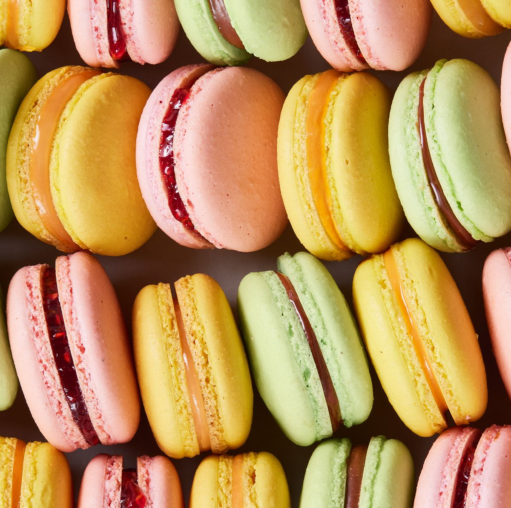
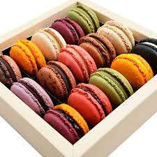

Macarons
Les macarons sont des petites gourmandises françaises élégantes et colorées qui requièrent attention et précision pour leur préparation. Voici une recette de base en français pour réaliser des macarons.
 Ingrédients :
- 150 g de poudre d'amande
- 150 g de sucre glace
- 110 g de blancs d'œufs (environ 4), divisés en deux parties égales
- 150 g de sucre semoule
- 37 ml d'eau
- Colorant alimentaire (au choix)
- Ganache ou confiture pour le garnissage
Instructions :
- Tamisez la poudre d'amande et le sucre glace dans un bol. Ajoutez 55 g de blancs d'œufs et mélangez pour obtenir une pâte d'amande.
- Préparez le sirop de sucre : Dans une casserole, chauffez le sucre semoule et l'eau jusqu'à atteindre 118°C. Utilisez un thermomètre de cuisine pour vérifier la température.
- Montez les blancs d'œufs : Pendant que le sirop chauffe, commencez à battre les 55 g restants de blancs d'œufs jusqu'à ce qu'ils soient mousseux. Une fois le sirop à 118°C, versez-le lentement sur les blancs montés en continuant de battre. Continuez jusqu'à ce que la meringue refroidisse et devienne brillante.
- Incorporez la meringue à la pâte d'amande : Ajoutez le colorant alimentaire de votre choix à la meringue, puis incorporez-la délicatement à la pâte d'amande jusqu'à obtenir une consistance lisse et brillante.
- Pochez les macarons : Préchauffez le four à 150°C. Sur une plaque recouverte de papier sulfurisé, pochez des petits ronds de pâte à l'aide d'une poche à douille.
- Laissez croûter : Laissez les macarons reposer à l'air libre pendant environ 30 minutes, jusqu'à ce qu'une croûte se forme à la surface.
- Cuisson : Enfournez les macarons pendant 12 à 14 minutes. Après cuisson, laissez-les refroidir avant de les décoller du papier.
- Garnissage : Une fois refroidis, assemblez les macarons deux par deux avec une petite quantité de ganache ou de confiture au centre.
Les clés pour réussir des macarons parfaits incluent la patience et la pratique. Les conditions météorologiques peuvent affecter la réussite de vos macarons, il est donc conseillé de les préparer dans un environnement le plus contrôlé possible. Bonne chance et bon appétit !